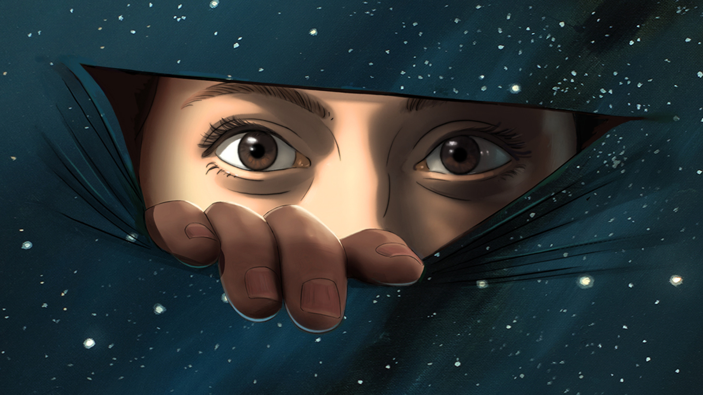

Exploring the world of Animation
Welcome to a world where imagination knows no bounds and creativity takes over. In this digital age, animation has transcended within the entertainment industry to become a powerful medium of expression, storytelling, and artistic innovation. From the enchanting worlds of animated films to the dynamic realms of video games and beyond. Animation has proven its magic by captivating audiences of all ages across the globe.
In this blog series, we embark on a journey into the heart of animation, uncovering its rich history, exploring its diverse forms, and delving into the mesmerizing techniques that bring characters and worlds to life on screen. Whether you're an aspiring animator, a professional, or simply a lover of animated storytelling.Join us as we dive deep into the fascinating world of animation and discover the endless possibilities that await.